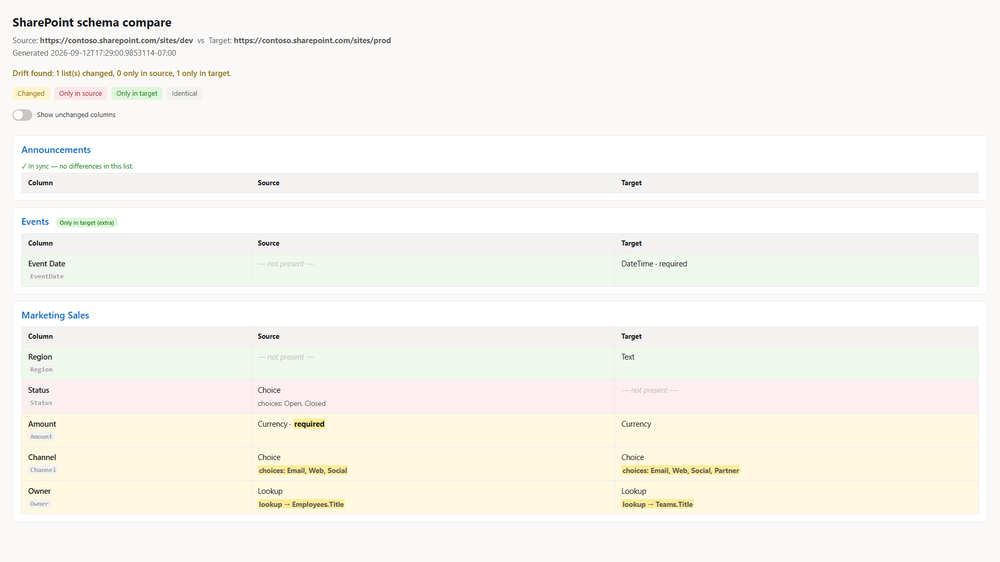

Compare SharePoint list schema between two sites
Summary
A schema diff for SharePoint, in the spirit of a SQL schema compare or a git diff. Point it at two sites (or a saved baseline versus a live site) and it reports exactly what drifted between them: lists that exist on only one side, and for every custom column, whether it was Added, Removed, or Changed (type, Required, choices, lookup target, formula, default, or indexing).
It does not copy anything. Provisioning tools already copy structure well; this answers a different question, one they do not: what is actually different between these two sites right now? That comes up constantly for environment drift (Dev, Test, and Prod slowly diverging when someone edits a column by hand), provisioning verification (did Invoke-PnPSiteTemplate apply everything?), migration validation, and keeping a schema baseline in source control.
The design point that makes it work: you cannot diff raw SchemaXml, because it carries values that differ on every site (GUIDs, ColName, version numbers), so a naive comparison flags everything as changed. This script normalises each column to a canonical model and compares that. Columns are matched by internal name, and a lookup's target is resolved from its GUID to the target list title, so a lookup to Projects matches across two sites even though the underlying list GUIDs are different.
It runs two ways. Give it two site URLs to compare live, or give it a saved snapshot on one side (export one with -ExportSourceSnapshot) to check a live site against a committed baseline. It writes a colour-coded console summary, an HTML report, and a JSON report, and it sets its exit code (0 in sync, 2 drift found, 1 error) so a pipeline can fail the build when a site has drifted from its approved baseline. The HTML report presents the comparison side by side, one aligned table per list with Source and Target columns colour-coded by status; identical columns are shown too, so it doubles as schema documentation even when the sites are in sync.

Note
Reading list and column settings requires access to both sites. Register an app for interactive sign-in once with Register-PnPEntraIDAppForInteractiveLogin and pass its client id with -ClientId. For unattended runs (CI), pass -Tenant and -Thumbprint (or -CertificatePath) instead for app-only certificate authentication.
This focused sample is drawn from a fuller tool that adds content types, views, and Managed Metadata handling: SharePoint List Schema Compare.
<#
.SYNOPSIS
Compare the LIST + FIELD schema of two SharePoint sites (or a saved baseline vs a live site)
and report exactly what is different - lists only on one side, and per-field Added / Removed / Changed.
.DESCRIPTION
A "schema compare" for SharePoint, in the spirit of a SQL-schema diff or a git diff.
It does NOT copy anything. It reads structure and tells you what drifted.
Use cases:
- Environment drift (Dev vs Test vs Prod got out of sync)
- Provisioning verification (did Invoke-PnPSiteTemplate actually apply everything?)
- Migration validation (does the target match the source after a move?)
- Schema in version control (snapshot to JSON, commit, diff current vs baseline)
KEY DESIGN POINT: raw SchemaXml cannot be diffed (GUIDs / ColName / version differ per site,
so everything looks "changed"). This tool normalises each field to a canonical model
{ internalName, type, required, choices, lookupTarget(by TITLE), formula, default, indexed }
and diffs THAT. Fields are matched by internal name; lookup targets are resolved GUID -> list TITLE
so a lookup to "Projects" matches across sites even though the GUIDs differ.
.PARAMETER SourceUrl / TargetUrl
Live site URLs to snapshot and compare (live-vs-live mode).
.PARAMETER SourceSnapshotPath / TargetSnapshotPath
Use a previously exported snapshot JSON instead of a live URL on that side
(baseline-vs-live mode, and how the offline tests run).
.PARAMETER ExportSourceSnapshot / ExportTargetSnapshot
Also write the snapshot(s) to JSON so they can be committed as a baseline.
.PARAMETER Lists
Optional list of list Titles to limit the comparison.
.PARAMETER IncludeHidden
Include hidden lists (default: skip them).
.PARAMETER OutDir
Folder for the JSON + HTML reports (default: current folder).
.OUTPUTS
Console table, schema-diff.json, schema-diff.html.
Exit code: 0 = identical, 2 = drift found, 1 = error. (CI can gate on this.)
.EXAMPLE
# Live vs live
.\Compare-SPListSchema.ps1 -SourceUrl https://contoso.sharepoint.com/sites/dev `
-TargetUrl https://contoso.sharepoint.com/sites/prod
.EXAMPLE
# Capture a baseline, then later check for drift
.\Compare-SPListSchema.ps1 -SourceUrl https://contoso.sharepoint.com/sites/prod -ExportSourceSnapshot .\prod-baseline.json
.\Compare-SPListSchema.ps1 -SourceSnapshotPath .\prod-baseline.json -TargetUrl https://contoso.sharepoint.com/sites/prod
#>
[CmdletBinding()]
param(
[string]$SourceUrl,
[string]$TargetUrl,
[string]$SourceSnapshotPath,
[string]$TargetSnapshotPath,
[string]$ClientId = "a0748433-4fa0-4bf0-8c45-949d49fbe112",
[string]$Tenant,
[string]$Thumbprint,
[string]$CertificatePath,
[System.Security.SecureString]$CertificatePassword,
[string[]]$Lists,
[switch]$IncludeHidden,
[string]$ExportSourceSnapshot,
[string]$ExportTargetSnapshot,
[string]$OutDir = ".",
[switch]$NoHtml,
[switch]$NoInventory
)
$ErrorActionPreference = 'Stop'
# ---------- canonical field model from a live PnP field ----------
function ConvertTo-CanonicalField {
param($Field, [hashtable]$ListTitleById)
$type = $Field.TypeAsString
$choices = @()
$lookupTarget = $null; $lookupField = $null; $formula = $null
try {
[xml]$x = $Field.SchemaXml
$n = $x.Field
if ($n.CHOICES) { $choices = @($n.CHOICES.CHOICE) }
if ($n.Formula) { $formula = [string]$n.Formula }
if ($type -like 'Lookup*') {
$lid = [string]$n.List
if ($lid) {
$lid = $lid.Trim('{','}').ToLower()
if ($ListTitleById.ContainsKey($lid)) { $lookupTarget = $ListTitleById[$lid] }
else { $lookupTarget = "EXTERNAL:$lid" }
}
$lookupField = [string]$n.ShowField
}
} catch { Write-Verbose "Could not parse SchemaXml for '$($Field.InternalName)': $($_.Exception.Message)" }
[pscustomobject][ordered]@{
internalName = [string]$Field.InternalName
displayName = [string]$Field.Title
type = [string]$type
required = [bool]$Field.Required
choices = $choices
lookupTarget = $lookupTarget
lookupField = $lookupField
formula = $formula
default = [string]$Field.DefaultValue
indexed = [bool]$Field.Indexed
}
}
# ---------- live snapshot from a site ----------
function Get-SchemaSnapshotLive {
param([string]$Url, [hashtable]$Auth, [string[]]$Lists, [switch]$IncludeHidden)
$mode = if ($Auth.ContainsKey('Interactive')) { 'interactive' } else { 'app-only' }
Write-Host "Connecting to $Url ($mode) ..." -ForegroundColor Cyan
Connect-PnPOnline -Url $Url @Auth | Out-Null
$all = Get-PnPList -Includes RootFolder, Hidden, BaseTemplate
$titleById = @{}
foreach ($l in $all) { $titleById[$l.Id.Guid.ToLower()] = $l.Title }
$listsOut = @()
foreach ($l in $all) {
if ($l.Hidden -and -not $IncludeHidden) { continue }
if ($l.BaseTemplate -notin 100, 101) { continue } # generic lists + document libraries
if ($Lists -and ($l.Title -notin $Lists)) { continue }
try {
$flds = Get-PnPField -List $l | Where-Object { -not $_.Hidden -and -not $_.FromBaseType -and $_.InternalName -ne 'ContentType' }
} catch {
Write-Warning "Skipping list '$($l.Title)': $($_.Exception.Message)"
continue
}
$canon = @()
foreach ($f in $flds) { $canon += ConvertTo-CanonicalField -Field $f -ListTitleById $titleById }
$listsOut += [pscustomobject][ordered]@{
title = [string]$l.Title
url = [string]$l.RootFolder.ServerRelativeUrl
template = [int]$l.BaseTemplate
fields = $canon
}
Write-Host (" {0,-40} {1} columns" -f $l.Title, $canon.Count) -ForegroundColor DarkGray
}
[pscustomobject][ordered]@{
site = $Url
extracted = (Get-Date).ToString('o')
lists = $listsOut
}
}
function Get-Snapshot {
param([string]$Url, [string]$SnapshotPath, [hashtable]$Auth, [string[]]$Lists, [switch]$IncludeHidden, [string]$Export)
if ($SnapshotPath) {
Write-Host "Loading snapshot $SnapshotPath ..." -ForegroundColor Cyan
$snap = Get-Content -Raw -Path $SnapshotPath | ConvertFrom-Json
} else {
$snap = Get-SchemaSnapshotLive -Url $Url -Auth $Auth -Lists $Lists -IncludeHidden:$IncludeHidden
}
if ($Export) {
$snap | ConvertTo-Json -Depth 10 | Set-Content -Path $Export -Encoding UTF8
Write-Host "Snapshot saved to $Export" -ForegroundColor Green
}
$snap
}
# ---------- the diff engine ----------
$FIELD_PROPS = 'type', 'required', 'lookupTarget', 'lookupField', 'formula', 'default', 'indexed'
function Compare-Schema {
param($Source, $Target)
$srcByTitle = @{}; foreach ($l in $Source.lists) { $srcByTitle[$l.title] = $l }
$tgtByTitle = @{}; foreach ($l in $Target.lists) { $tgtByTitle[$l.title] = $l }
$onlyInSource = @(); $onlyInTarget = @(); $changed = @()
foreach ($l in $Source.lists) { if (-not $tgtByTitle.ContainsKey($l.title)) { $onlyInSource += $l.title } }
foreach ($l in $Target.lists) { if (-not $srcByTitle.ContainsKey($l.title)) { $onlyInTarget += $l.title } }
foreach ($sl in $Source.lists) {
if (-not $tgtByTitle.ContainsKey($sl.title)) { continue }
$tl = $tgtByTitle[$sl.title]
$sf = @{}; foreach ($f in $sl.fields) { $sf[$f.internalName] = $f }
$tf = @{}; foreach ($f in $tl.fields) { $tf[$f.internalName] = $f }
$fAdded = @(); $fRemoved = @(); $fChanged = @()
foreach ($f in $tl.fields) { if (-not $sf.ContainsKey($f.internalName)) { $fAdded += $f.internalName } }
foreach ($f in $sl.fields) { if (-not $tf.ContainsKey($f.internalName)) { $fRemoved += $f.internalName } }
foreach ($f in $sl.fields) {
if (-not $tf.ContainsKey($f.internalName)) { continue }
$t = $tf[$f.internalName]
$changes = @()
foreach ($p in $FIELD_PROPS) {
$a = "$($f.$p)"; $b = "$($t.$p)"
if ($a -ne $b) { $changes += [pscustomobject]@{ property = $p; source = $a; target = $b } }
}
$ac = (@($f.choices) -join ' | '); $bc = (@($t.choices) -join ' | ')
if ($ac -ne $bc) { $changes += [pscustomobject]@{ property = 'choices'; source = $ac; target = $bc } }
if ($changes.Count) { $fChanged += [pscustomobject]@{ field = $f.internalName; displayName = $f.displayName; changes = $changes } }
}
if ($fAdded.Count -or $fRemoved.Count -or $fChanged.Count) {
$changed += [pscustomobject]@{
list = $sl.title
fieldsOnlyInTarget = $fAdded
fieldsOnlyInSource = $fRemoved
fieldsChanged = $fChanged
}
}
}
[pscustomobject][ordered]@{
source = $Source.site
target = $Target.site
generated = (Get-Date).ToString('o')
listsOnlyInSource = $onlyInSource
listsOnlyInTarget = $onlyInTarget
listsChanged = $changed
inSync = -not ($onlyInSource.Count -or $onlyInTarget.Count -or $changed.Count)
}
}
# ---------- console report ----------
function Write-ConsoleReport {
param($Diff)
Write-Host ""
Write-Host "=== SharePoint schema compare ===" -ForegroundColor White
Write-Host ("Source: {0}" -f $Diff.source)
Write-Host ("Target: {0}" -f $Diff.target)
Write-Host ""
if ($Diff.inSync) { Write-Host "IN SYNC - no structural differences found." -ForegroundColor Green; return }
if ($Diff.listsOnlyInSource.Count) { Write-Host ("Lists only in SOURCE (missing from target): {0}" -f ($Diff.listsOnlyInSource -join ', ')) -ForegroundColor Red }
if ($Diff.listsOnlyInTarget.Count) { Write-Host ("Lists only in TARGET (extra): {0}" -f ($Diff.listsOnlyInTarget -join ', ')) -ForegroundColor Yellow }
foreach ($l in $Diff.listsChanged) {
Write-Host ""
Write-Host ("List: {0}" -f $l.list) -ForegroundColor Cyan
if ($l.fieldsOnlyInSource.Count) { Write-Host (" - removed on target : {0}" -f ($l.fieldsOnlyInSource -join ', ')) -ForegroundColor Red }
if ($l.fieldsOnlyInTarget.Count) { Write-Host (" + added on target : {0}" -f ($l.fieldsOnlyInTarget -join ', ')) -ForegroundColor Green }
foreach ($fc in $l.fieldsChanged) {
Write-Host (" ~ {0}" -f $fc.field) -ForegroundColor Yellow
foreach ($c in $fc.changes) { Write-Host (" {0}: '{1}' -> '{2}'" -f $c.property, $c.source, $c.target) -ForegroundColor DarkYellow }
}
}
Write-Host ""
}
# ---------- compact column signature for a side-by-side cell ----------
function Get-FieldSig {
param($Field, $Enc, [string[]]$DiffProps = @())
if ($null -eq $Field) { return "<span class='none'>— not present —</span>" }
$hl = { param($t, $p) if ($DiffProps -contains $p) { "<b class='hl'>$t</b>" } else { $t } }
$parts = @( (& $hl (& $Enc $Field.type) 'type') )
if ($Field.required) { $parts += (& $hl 'required' 'required') }
if ($Field.indexed) { $parts += (& $hl 'indexed' 'indexed') }
$sig = $parts -join ' · '
$detail = $null; $dprop = $null
if (@($Field.choices).Count) { $detail = 'choices: ' + (& $Enc ((@($Field.choices)) -join ', ')); $dprop = 'choices' }
elseif ($Field.lookupTarget) { $detail = 'lookup → ' + (& $Enc $Field.lookupTarget) + $(if ($Field.lookupField) { '.' + (& $Enc $Field.lookupField) } else { '' }); $dprop = 'lookupTarget' }
elseif ($Field.formula) { $detail = 'formula = ' + (& $Enc $Field.formula); $dprop = 'formula' }
if ($detail) {
if ($dprop -and (($DiffProps -contains $dprop) -or ($dprop -eq 'lookupTarget' -and $DiffProps -contains 'lookupField'))) { $detail = "<b class='hl'>$detail</b>" }
$sig += "<div class='det'>$detail</div>"
}
$sig
}
# ---------- HTML report: aligned, side-by-side (source | target) ----------
function Write-HtmlReport {
param($Diff, $Source, $Target, [switch]$IncludeInventory, [string]$Path)
Add-Type -AssemblyName System.Web
$enc = { param($s) if ($null -eq $s) { '' } else { [System.Web.HttpUtility]::HtmlEncode([string]$s) } }
$srcL = @{}; foreach ($l in $Source.lists) { $srcL[$l.title] = $l }
$tgtL = @{}; foreach ($l in $Target.lists) { $tgtL[$l.title] = $l }
$allTitles = @(@($Source.lists.title) + @($Target.lists.title) | Select-Object -Unique | Sort-Object)
$sb = [System.Text.StringBuilder]::new()
[void]$sb.Append(@"
<!doctype html><html><head><meta charset="utf-8"><title>SharePoint schema compare</title>
<style>
body{font:15px/1.6 -apple-system,Segoe UI,Roboto,sans-serif;margin:24px;color:#1b1b1b;background:#faf9f8}
h1{font-size:23px;margin:0 0 4px}
.meta{color:#605e5c;margin-bottom:14px}
.sync{color:#107c10;font-weight:600;font-size:15px}
.summary{color:#8a6d00;font-weight:600}
.legend{margin:6px 0 18px;font-size:13px}
.legend .k{display:inline-block;padding:2px 10px;border-radius:4px;margin-right:8px}
.k.chg{background:#fff4ce;color:#8a6d00}
.k.only-src{background:#fde7e9;color:#a4262c}
.k.only-tgt{background:#dff6dd;color:#107c10}
.k.same{background:#f3f2f1;color:#605e5c}
.card{background:#fff;border:1px solid #edebe9;border-radius:8px;padding:12px 16px;margin:12px 0}
.list{font-size:18px;font-weight:600;color:#0f6cbd;margin:0 0 8px}
.badge{font-size:11px;font-weight:600;padding:2px 8px;border-radius:10px;margin-left:8px}
.badge.r{background:#fde7e9;color:#a4262c}.badge.g{background:#dff6dd;color:#107c10}
table{border-collapse:collapse;margin:2px 0;width:100%;table-layout:fixed}
td,th{border:1px solid #edebe9;padding:8px 12px;text-align:left;font-size:14.5px;vertical-align:top;word-break:break-word}
th{background:#f3f2f1;font-size:13px}
code{background:#f3f2f1;padding:1px 4px;border-radius:3px;font-size:13px}
.muted{color:#a19f9d;font-size:13px;margin-top:2px}
.det{color:#605e5c;font-size:13.5px;margin-top:3px}
.none{color:#c8c6c4;font-style:italic}
tr.changed td{background:#fff8e1}
tr.only-src td{background:#fdeef0}
tr.only-tgt td{background:#eef8ec}
tr.changed td:first-child,tr.only-src td:first-child,tr.only-tgt td:first-child{font-weight:600}
b.hl{background:#ffec99;font-weight:700;padding:0 2px;border-radius:2px}
tr.same{display:none}
body.show-same tr.same{display:table-row}
.insync-note{display:none;color:#107c10;font-size:13px;margin:2px 0}
body:not(.show-same) .card.nodiff .insync-note{display:block}
.toggle{display:inline-flex;align-items:center;gap:9px;margin:0 0 16px;font-size:13px;color:#323130;cursor:pointer;user-select:none}
.toggle input{position:absolute;opacity:0;width:0;height:0}
.switch{position:relative;width:38px;height:22px;background:#c8c6c4;border-radius:22px;transition:background .15s;flex:none}
.switch::after{content:'';position:absolute;top:2px;left:2px;width:18px;height:18px;background:#fff;border-radius:50%;transition:transform .15s;box-shadow:0 1px 2px rgba(0,0,0,.3)}
.toggle input:checked + .switch{background:#0f6cbd}
.toggle input:checked + .switch::after{transform:translateX(16px)}
.toggle input:focus-visible + .switch{outline:2px solid #0f6cbd;outline-offset:2px}
</style></head><body class="$(if ($Diff.inSync) { 'show-same' })">
<h1>SharePoint schema compare</h1>
<div class="meta">Source: <b>$(& $enc $Diff.source)</b> vs Target: <b>$(& $enc $Diff.target)</b><br>Generated $(& $enc $Diff.generated)</div>
"@)
if ($Diff.inSync) {
[void]$sb.Append("<p class='sync'>✓ In sync — the two sites have the same list and column structure.</p>")
} else {
$nc = @($Diff.listsChanged).Count; $ns = @($Diff.listsOnlyInSource).Count; $nt = @($Diff.listsOnlyInTarget).Count
[void]$sb.Append("<p class='summary'>Drift found: $nc list(s) changed, $ns only in source, $nt only in target.</p>")
}
[void]$sb.Append("<div class='legend'><span class='k chg'>Changed</span><span class='k only-src'>Only in source</span><span class='k only-tgt'>Only in target</span><span class='k same'>Identical</span></div>")
if ($IncludeInventory) {
$chk = if ($Diff.inSync) { 'checked' } else { '' }
[void]$sb.Append("<label class='toggle'><input type='checkbox' $chk onclick=""document.body.classList.toggle('show-same', this.checked)""><span class='switch'></span>Show unchanged columns</label>")
}
$order = @{ 'only-src' = 0; 'only-tgt' = 0; 'changed' = 1; 'same' = 2 }
foreach ($title in $allTitles) {
$s = $srcL[$title]; $t = $tgtL[$title]
$lstatus = if ($null -eq $t) { 'only-src' } elseif ($null -eq $s) { 'only-tgt' } else { 'both' }
$badge = switch ($lstatus) {
'only-src' { "<span class='badge r'>Only in source (missing from target)</span>" }
'only-tgt' { "<span class='badge g'>Only in target (extra)</span>" }
default { '' }
}
$sf = @{}; if ($s) { foreach ($f in $s.fields) { $sf[$f.internalName] = $f } }
$tf = @{}; if ($t) { foreach ($f in $t.fields) { $tf[$f.internalName] = $f } }
$names = @(@($sf.Keys) + @($tf.Keys) | Select-Object -Unique)
$rows = foreach ($n in $names) {
$a = $sf[$n]; $b2 = $tf[$n]
$d = @()
$st = if ($null -eq $b2) { 'only-src' } elseif ($null -eq $a) { 'only-tgt' } else {
foreach ($p in $FIELD_PROPS) { if ("$($a.$p)" -ne "$($b2.$p)") { $d += $p } }
if ((@($a.choices) -join '|') -ne (@($b2.choices) -join '|')) { $d += 'choices' }
if ($d.Count) { 'changed' } else { 'same' }
}
$disp = if ($a) { $a.displayName } else { $b2.displayName }
[pscustomobject]@{ name = $n; disp = $disp; a = $a; b = $b2; st = $st; diff = $d }
}
$rows = @($rows)
# -NoInventory => diff-only: skip in-sync lists, and show only differing rows
if (-not $IncludeInventory) {
$rows = @($rows | Where-Object { $_.st -ne 'same' })
if ($lstatus -eq 'both' -and $rows.Count -eq 0) { continue }
}
$rows = @($rows | Sort-Object @{ e = { $order[$_.st] } }, disp)
$hasDiff = @($rows | Where-Object { $_.st -ne 'same' }).Count -gt 0
$cardClass = if ($hasDiff) { 'card' } else { 'card nodiff' }
[void]$sb.Append("<div class='$cardClass'><div class='list'>$(& $enc $title) $badge</div>")
[void]$sb.Append("<div class='insync-note'>✓ In sync — no differences in this list.</div>")
[void]$sb.Append("<table><colgroup><col style='width:24%'><col style='width:38%'><col style='width:38%'></colgroup><tr><th>Column</th><th>Source</th><th>Target</th></tr>")
if ($rows.Count -eq 0) {
[void]$sb.Append("<tr class='placeholder'><td colspan='3' class='muted'>No custom columns.</td></tr>")
}
foreach ($r in $rows) {
[void]$sb.Append("<tr class='$($r.st)'><td>$(& $enc $r.disp)<div class='muted'><code>$(& $enc $r.name)</code></div></td><td>$(Get-FieldSig -Field $r.a -Enc $enc -DiffProps $r.diff)</td><td>$(Get-FieldSig -Field $r.b -Enc $enc -DiffProps $r.diff)</td></tr>")
}
[void]$sb.Append("</table></div>")
}
[void]$sb.Append("</body></html>")
Set-Content -Path $Path -Value $sb.ToString() -Encoding UTF8
}
# =================== main ===================
# Dot-sourcing the script (e.g. from Pester) defines the functions without running the report.
if ($MyInvocation.InvocationName -eq '.') { return }
try {
if (-not $SourceUrl -and -not $SourceSnapshotPath) { throw "Provide -SourceUrl or -SourceSnapshotPath." }
if (-not $TargetUrl -and -not $TargetSnapshotPath) { throw "Provide -TargetUrl or -TargetSnapshotPath." }
if (($SourceUrl -or $TargetUrl) -and -not (Get-Module -ListAvailable -Name PnP.PowerShell)) {
throw "PnP.PowerShell is required for live comparison. Install it with: Install-Module PnP.PowerShell -Scope CurrentUser"
}
if (-not (Test-Path $OutDir)) { New-Item -ItemType Directory -Force -Path $OutDir | Out-Null }
# Build the PnP connection splat: app-only (certificate) when a thumbprint or cert path is given,
# otherwise interactive sign-in. App-only is what lets this run headless in CI.
$auth = @{ ClientId = $ClientId }
if ($Thumbprint) {
if (-not $Tenant) { throw "App-only auth needs -Tenant (e.g. contoso.onmicrosoft.com) alongside -Thumbprint." }
$auth.Tenant = $Tenant; $auth.Thumbprint = $Thumbprint
}
elseif ($CertificatePath) {
if (-not $Tenant) { throw "App-only auth needs -Tenant (e.g. contoso.onmicrosoft.com) alongside -CertificatePath." }
$auth.Tenant = $Tenant; $auth.CertificatePath = $CertificatePath
if ($CertificatePassword) { $auth.CertificatePassword = $CertificatePassword }
}
else {
$auth.Interactive = $true
}
$src = Get-Snapshot -Url $SourceUrl -SnapshotPath $SourceSnapshotPath -Auth $auth -Lists $Lists -IncludeHidden:$IncludeHidden -Export $ExportSourceSnapshot
$tgt = Get-Snapshot -Url $TargetUrl -SnapshotPath $TargetSnapshotPath -Auth $auth -Lists $Lists -IncludeHidden:$IncludeHidden -Export $ExportTargetSnapshot
$diff = Compare-Schema -Source $src -Target $tgt
Write-ConsoleReport -Diff $diff
$jsonPath = Join-Path $OutDir 'schema-diff.json'
$diff | ConvertTo-Json -Depth 12 | Set-Content -Path $jsonPath -Encoding UTF8
Write-Host "JSON report: $jsonPath" -ForegroundColor Gray
if (-not $NoHtml) {
$htmlPath = Join-Path $OutDir 'schema-diff.html'
Write-HtmlReport -Diff $diff -Source $src -Target $tgt -IncludeInventory:(-not $NoInventory) -Path $htmlPath
Write-Host "HTML report: $htmlPath" -ForegroundColor Gray
}
if ($diff.inSync) { exit 0 } else { exit 2 }
}
catch {
Write-Host "ERROR: $($_.Exception.Message)" -ForegroundColor Red
exit 1
}
Check out the PnP PowerShell to learn more at: https://aka.ms/pnp/powershell
The way you login into PnP PowerShell has changed please read PnP Management Shell EntraID app is deleted : what should I do ?
Source Credit
Sample first appeared on https://github.com/gvijaikumar9/SPSchemaCompare
Contributors
| Author(s) |
|---|
| Vijay Kumar G |
Disclaimer
THESE SAMPLES ARE PROVIDED AS IS WITHOUT WARRANTY OF ANY KIND, EITHER EXPRESS OR IMPLIED, INCLUDING ANY IMPLIED WARRANTIES OF FITNESS FOR A PARTICULAR PURPOSE, MERCHANTABILITY, OR NON-INFRINGEMENT.